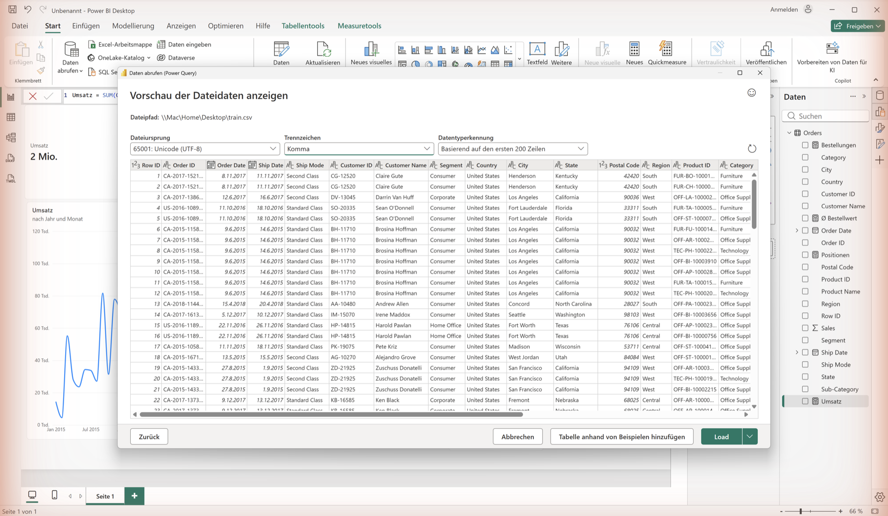
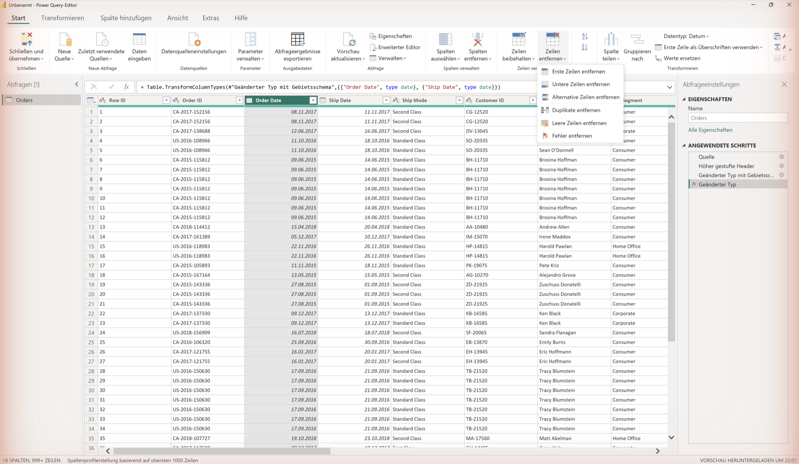

DatenquellenData Sources
BI-Systeme integrieren Daten aus vielen verschiedenen Quellen. Je nach Struktur der Daten unterscheidet man vier Hauptkategorien.BI systems integrate data from many different sources. Depending on the structure of the data, four main categories are distinguished.
Kategorien von DatenquellenCategories of Data Sources
StrukturiertStructured
Klar definiertes Schema, Zeilen und Spalten. Einfach zu verarbeiten.Clearly defined schema, rows and columns. Easy to process.
CSVExcelSQL (MySQL, PostgreSQL)SAP-ExporteSAP exports
Semi-strukturiertSemi-structured
Flexibles Schema, hierarchische oder verschachtelte Strukturen.Flexible schema, hierarchical or nested structures.
JSONXMLREST-APIsREST APIsGraphQL (API-Abfrageparadigma, Antwort: JSON)GraphQL (API query paradigm, response: JSON)Log-Dateien (JSON-Lines, Syslog)Log files (JSON lines, syslog)
UnstrukturiertUnstructured
Kein festes Schema. Aufbereitung durch NLP, OCR oder KI nötig. Wachsende Relevanz durch LLMs.No fixed schema. Requires NLP, OCR or AI processing. Growing relevance through LLMs.
PDF-DokumentePDF documentsE-MailsEmailsBilderImagesAudio/VideoFreitext-NotizenFree-text notes
Cloud-QuellenCloud Sources
Online-Dienste mit API-Zugriff oder nativer Konnektorunterstützung. Können strukturierte und unstrukturierte Daten enthalten.Online services with API access or native connector support. Can contain structured and unstructured data.
Google SheetsAzure Blob StorageSharePointSnowflakeBigQuery
Daten laden in Power BILoading Data in Power BI
In Power BI öffnet der Dialog „Daten abrufen“ (Start → Daten abrufen) eine Quellen-Auswahl mit über 100 Konnektoren. Nach der Verbindung öffnet sich der Power Query Editor zur Vorschau und Transformation.In Power BI, the "Get Data" dialog (Home → Get Data) opens a source selection with over 100 connectors. After connecting, the Power Query Editor opens for preview and transformation.


Daten laden in PythonLoading Data in Python
Mit pandas und der requests-Bibliothek können alle gängigen Datenquellen eingelesen werden:With pandas and the requests library, all common data sources can be read:
Daten für diesen AbschnittData for this section
Alle Codeblöcke auf dieser Seite arbeiten mit Dateien, die hier bereitliegen. Die drei Beispielquellen (CSV, Excel, JSON) enthalten dieselben zwölf Zeilen – daran lässt sich prüfen, ob alle Wege zum selben Ergebnis führen. train.csv ist der Kursdatensatz für die Datenqualitätsübung: 9.800 Zeilen, TT/MM/JJJJ, Encoding latin-1.Every code block on this page works with files provided right here. The three example sources (CSV, Excel, JSON) contain the same twelve rows – that is how you check whether all routes lead to the same result. train.csv is the course dataset for the data-quality exercise: 9,800 rows, DD/MM/YYYY, encoding latin-1.
umsatz.csv
bericht.xlsx
sales_api.json
train.csv (Kursdatensatz)train.csv (course dataset)
Originalquelle bei KaggleOriginal source on Kaggle
Quelle: Superstore Sales Dataset von Rohit Sahoo (Kaggle), Lizenz GPL 2. Die Beispieldateien umsatz.csv, bericht.xlsx und sales_api.json sind frei erfunden und dienen nur der Übung.Source: Superstore Sales Dataset by Rohit Sahoo (Kaggle), licensed GPL 2. The example files umsatz.csv, bericht.xlsx and sales_api.json are fictional and exist only for practice.
# Drei Quellen, dieselben Zahlen. Alle drei Dateien stehen oben zum
# Download und liegen im Repo unter data/beispiel/.
import pandas as pd
import requests
# 1. CSV
df_csv = pd.read_csv('umsatz.csv')
# 2. Excel - der Blattname gehoert zur Datei, nicht zur Sprache
df_excel = pd.read_excel('bericht.xlsx', sheet_name='Umsatz')
# 3. REST-API: dieselben Daten, aber ueber HTTP.
# Die Nutzlast liegt unter dem Schluessel 'data' - deshalb steht er
# in json_normalize. Bei anderen APIs heisst er 'results' oder 'items';
# ein Blick in die Antwort spart hier viel Raterei.
url = 'https://swrobuts.github.io/BINT-Lab/data/beispiel/sales_api.json'
response = requests.get(url, timeout=10)
response.raise_for_status() # wirft bei 404 statt still leer zu bleiben
df_api = pd.json_normalize(response.json()['data'])
for name, df in [('CSV', df_csv), ('Excel', df_excel), ('API', df_api)]:
print(f"{name:6} {df.shape} Umsatz {df['Umsatz'].sum():,.2f}")
# Probe: drei Wege, ein Ergebnis. Genau darum geht es in diesem Abschnitt.
assert df_csv['Umsatz'].sum() == df_excel['Umsatz'].sum() == df_api['Umsatz'].sum()
print('Alle drei Quellen stimmen ueberein.')
# Three sources, the same numbers. All three files are available for
# download above and live in the repo under data/beispiel/.
import pandas as pd
import requests
# 1. CSV
df_csv = pd.read_csv('umsatz.csv')
# 2. Excel - the sheet name belongs to the file, not to the language
df_excel = pd.read_excel('bericht.xlsx', sheet_name='Umsatz')
# 3. REST API: the same data, but over HTTP.
# The payload sits under the key 'data' - that is why it appears in
# json_normalize. Other APIs call it 'results' or 'items'; looking at
# the actual response saves a lot of guesswork here.
url = 'https://swrobuts.github.io/BINT-Lab/data/beispiel/sales_api.json'
response = requests.get(url, timeout=10)
response.raise_for_status() # raises on 404 instead of staying silently empty
df_api = pd.json_normalize(response.json()['data'])
for name, df in [('CSV', df_csv), ('Excel', df_excel), ('API', df_api)]:
print(f"{name:6} {df.shape} revenue {df['Umsatz'].sum():,.2f}")
# Check: three routes, one result. That is the whole point of this section.
assert df_csv['Umsatz'].sum() == df_excel['Umsatz'].sum() == df_api['Umsatz'].sum()
print('All three sources agree.')
Voraussetzung: pip install pandas requests openpyxl, dazu umsatz.csv und bericht.xlsx aus dem Download oben im selben Verzeichnis. Die dritte Quelle wird über HTTP geladen und braucht eine Internetverbindung. Sollausgabe: dreimal (12, 5) und dreimal Umsatz 243.209,05, danach „Alle drei Quellen stimmen überein.“Prerequisites: pip install pandas requests openpyxl, plus umsatz.csv and bericht.xlsx from the download above in the same directory. The third source is fetched over HTTP and needs an internet connection. Expected output: three times (12, 5) and three times revenue 243,209.05, then “All three sources agree.”
Dasselbe Muster auf dem Kursdatensatz train.csvThe same pattern on the course dataset train.csv
# Dieselben drei Quellen, aber mit dem Kursdatensatz statt Platzhaltern.
# train.csv liegt im selben Verzeichnis wie dieses Skript.
import pandas as pd
# 1. CSV laden
df = pd.read_csv('train.csv', encoding='latin-1')
# 2. Datum: die Datei nutzt TT/MM/JJJJ -> dayfirst=True ist Pflicht,
# sonst bricht das Parsen ab, sobald der Tag groesser als 12 ist.
df['Order Date'] = pd.to_datetime(df['Order Date'], dayfirst=True)
# 3. Struktur und Qualitaet pruefen
print(df.shape) # (9800, 18)
print(round(df['Sales'].sum(), 2)) # 2261536.78
print(df['Order ID'].nunique()) # 4922
print(df.isnull().sum()[lambda s: s > 0]) # Postal Code 11
# The same three sources, but with the course dataset instead of placeholders.
# train.csv sits in the same directory as this script.
import pandas as pd
# 1. Load CSV
df = pd.read_csv('train.csv', encoding='latin-1')
# 2. Dates: the file uses DD/MM/YYYY -> dayfirst=True is mandatory,
# otherwise parsing breaks as soon as the day exceeds 12.
df['Order Date'] = pd.to_datetime(df['Order Date'], dayfirst=True)
# 3. Check structure and quality
print(df.shape) # (9800, 18)
print(round(df['Sales'].sum(), 2)) # 2261536.78
print(df['Order ID'].nunique()) # 4922
print(df.isnull().sum()[lambda s: s > 0]) # Postal Code 11
Voraussetzung: pandas installiert, train.csv im selben Verzeichnis (Download oben). Sollausgabe: (9800, 18) · 2261536.78 · 4922 · Postal Code 11. Weichen die Zahlen ab, wurde meist dayfirst=True vergessen.Prerequisites: pandas installed, train.csv in the same directory (download above). Expected output: (9800, 18) · 2261536.78 · 4922 · Postal Code 11. If the numbers differ, dayfirst=True was usually forgotten.
Selbstcheck (1 Minute)Self-check (1 minute)
- df.shape liefert (9800, 18) – sonst wurde die falsche Datei geladen.df.shape returns (9800, 18) – otherwise the wrong file was loaded.
- Die Umsatzsumme ist 2261536.78 – weicht sie ab, stimmt das encoding nicht.The revenue total is 2261536.78 – if it differs, the encoding is wrong.
- 4922 verschiedene Order ID – nicht zu verwechseln mit den 9800 Positionen.4922 distinct Order ID values – not to be confused with the 9800 line items.
- Genau elf fehlende Postal Code und sonst keine Nullwerte.Exactly eleven missing Postal Code values and no other nulls.
- Typischer Fehler: ohne dayfirst=True bricht das Parsen ab, sobald der Tag größer als 12 ist.Common error: without dayfirst=True parsing breaks as soon as the day exceeds 12.
DatenmodellierungData Modelling
Ein gutes Datenmodell ist entscheidend für die Performance und Verständlichkeit eines BI-Systems. Das Star Schema ist das verbreitetste Modell im Data Warehousing.A good data model is crucial for the performance and comprehensibility of a BI system. The star schema is the most common model in data warehousing.
Star Schema
Im Star Schema liegt eine zentrale Faktentabelle im Mittelpunkt, die von mehreren Dimensionstabellen umgeben wird – wie ein Stern.In the star schema, a central fact table is at the centre, surrounded by several dimension tables – like a star.
Dim_Zeit
|
Dim_Produkt — Fakt_Umsatz — Dim_Kunde
|
Dim_Region
Dim_Time
|
Dim_Product — Fact_Sales — Dim_Customer
|
Dim_Region
FaktentabelleFact Table
Enthält die Messgrößen (Kennzahlen) des Geschäftsprozesses: Umsatz, Menge, Preis, Rabatt. Jede Zeile repräsentiert einen Geschäftsvorfall (z. B. eine Bestellung). Die Faktentabelle hat in der Regel viele Millionen Zeilen.Contains the measures (metrics) of the business process: revenue, quantity, price, discount. Each row represents a business transaction (e.g. an order). The fact table typically has many millions of rows.
DimensionstabellenDimension Tables
Beschreiben den Kontext der Fakten: Zeit (Jahr, Quartal, Monat), Produkt (Kategorie, Marke), Kunde (Region, Segment), Region (Land, Stadt). Dimensionstabellen sind kleiner und enthalten beschreibende Attribute.Describe the context of the facts: Time (year, quarter, month), Product (category, brand), Customer (region, segment), Region (country, city). Dimension tables are smaller and contain descriptive attributes.
Star Schema vs. Snowflake Schema
| MerkmalFeature | Star Schema | Snowflake Schema |
|---|---|---|
| DimensionenDimensions | Flach (denormalisiert)Flat (denormalised) | Normalisiert (mehrere Tabellen)Normalised (multiple tables) |
| Performance | Schnellere AbfragenFaster queries | Etwas langsamer durch JOINsSlightly slower due to JOINs |
| SpeicherStorage | Höherer BedarfHigher requirement | Geringerer BedarfLower requirement |
| KomplexitätComplexity | Einfach zu verstehenEasy to understand | Komplexere StrukturMore complex structure |
| EinsatzUsage | Standard in Power BI, Tableau, Looker | Klassisch in normalisierten DWH (z. B. Inmon-Ansatz)Classic in normalised DWH (e.g. Inmon approach) |
Kimball vs. Inmon
Ralph Kimball (Bottom-Up, 1996): Fachbereichsbezogene Data Marts mit Star Schema, schnell produktiv. Bill Inmon (Top-Down, 1992): Unternehmensweites normalisiertes DWH (3NF), dann Data Marts ableiten. Moderne Praxis: Hybridansätze mit dem Data Vault 2.0 von Dan Linstedt.Ralph Kimball (Bottom-Up, 1996): Business-area data marts with star schema, quick to productionise. Bill Inmon (Top-Down, 1992): Enterprise-wide normalised DWH (3NF), then derive data marts. Modern practice: Hybrid approaches with Dan Linstedt’s Data Vault 2.0.
Slowly Changing Dimensions (SCD)
Dimensionsdaten ändern sich über die Zeit (z. B. Kundenadresse, Produktkategorie). SCD-Typen: Typ 1 = Überschreiben (kein Verlauf), Typ 2 = Neue Zeile mit Gültigkeitszeitraum (Standard im DWH), Typ 3 = Zusätzliche Spalte für den alten Wert.Dimension data changes over time (e.g. customer address, product category). SCD types: Type 1 = Overwrite (no history), Type 2 = New row with validity period (standard in DWH), Type 3 = Additional column for the old value.
EmpfehlungRecommendation
Für die meisten BI-Projekte ist das Star Schema (Kimball-Ansatz) die bessere Wahl: es ist einfacher zu verstehen, leichter zu pflegen und liefert in den meisten BI-Tools schnellere Abfragezeiten.For most BI projects, the star schema (Kimball approach) is the better choice: it is easier to understand, easier to maintain, and delivers faster query times in most BI tools.
DatenqualitätData Quality
Schlechte Datenqualität ist die häufigste Ursache für falsche BI-Ergebnisse. Das Erkennen und Beheben von Qualitätsproblemen ist ein zentraler Teil jedes ETL-Prozesses.Poor data quality is the most common cause of incorrect BI results. Identifying and fixing quality issues is a central part of every ETL process.
Datenqualitätsdimensionen (DAMA DMBOK)Data Quality Dimensions (DAMA DMBOK)
Das DAMA DMBOK-Framework definiert sechs Kernkategorien: Accuracy (Korrektheit), Completeness (Vollständigkeit), Consistency (Widerspruchsfreiheit), Timeliness (Aktualität), Validity (Regelkonformität) und Uniqueness (Eindeutigkeit). Diese Dimensionen bilden die Basis für systematisches Datenqualitätsmanagement.The DAMA DMBOK framework defines six core dimensions: Accuracy, Completeness, Consistency, Timeliness, Validity, and Uniqueness. These dimensions form the basis for systematic data quality management.
Häufige DatenqualitätsproblemeCommon Data Quality Issues
- 1NullwerteNull valuesFehlende Werte in Pflichtfeldern (z. B. kein Umsatz eingetragen)Missing values in required fields (e.g. no revenue entered)→
Zeilen entfernen oder mit Standardwert füllenRemove rows or fill with default value - 2DuplikateDuplicatesGleiche Datensätze mehrfach vorhanden (z. B. doppelte Bestellungen)Same records present multiple times (e.g. duplicate orders)→
Mit drop_duplicates() oder Power Query entfernenRemove with drop_duplicates() or Power Query - 3Falsche DatentypenWrong data typesDatum als Text gespeichert, Zahlen als StringDate stored as text, numbers as string→
pd.to_datetime(), astype(), Power Query: Typ ändernpd.to_datetime(), astype(), Power Query: change type - 4InkonsistenzenInconsistenciesSchreibweisen variieren: „DE“, „de“, „ Deutschland “Spellings vary: "DE", "de", " Germany "→
str.strip(), str.upper(), Ersetzungstabellenstr.strip(), str.upper(), replacement tables
Datenqualität prüfen & bereinigen mit PandasCheck & Clean Data Quality with Pandas
# Datenqualitaet auf dem Kursdatensatz - echte Defekte statt Platzhalter.
import pandas as pd
df = pd.read_csv('train.csv', encoding='latin-1')
# 1. Befund aufnehmen, bevor irgendetwas geaendert wird
print(df.isnull().sum()[lambda s: s > 0]) # Postal Code 11
print('Duplikate:', df.duplicated().sum()) # 0
print(df['Order Date'].dtype) # str bzw. object - noch Text, kein Datum
# 2. Typen richtigstellen. dayfirst=True ist Pflicht: die Datei ist TT/MM/JJJJ.
df['Order Date'] = pd.to_datetime(df['Order Date'], dayfirst=True)
df['Ship Date'] = pd.to_datetime(df['Ship Date'], dayfirst=True)
# 3. Schreibweisen vereinheitlichen, bevor gruppiert wird.
# Ohne strip() werden ' West' und 'West' zu zwei Gruppen.
df['Region'] = df['Region'].str.strip()
df['State'] = df['State'].str.strip()
# 4. Plausibilitaet pruefen statt blind bereinigen
print('Umsatz <= 0:', (df['Sales'] <= 0).sum()) # 0
print('Versand vor Bestellung:', (df['Ship Date'] < df['Order Date']).sum()) # 0
# 5. Die elf fehlenden Postal Code werden weder geloescht noch erfunden.
# Warum, steht in Lab 05 unter Datenqualitaet.
print('Zeilen nach Bereinigung:', len(df)) # 9800
# Data quality on the course dataset - real defects instead of placeholders.
import pandas as pd
df = pd.read_csv('train.csv', encoding='latin-1')
# 1. Record the findings before changing anything
print(df.isnull().sum()[lambda s: s > 0]) # Postal Code 11
print('Duplicates:', df.duplicated().sum()) # 0
print(df['Order Date'].dtype) # str or object - still text, not a date
# 2. Fix the types. dayfirst=True is mandatory: the file is DD/MM/YYYY.
df['Order Date'] = pd.to_datetime(df['Order Date'], dayfirst=True)
df['Ship Date'] = pd.to_datetime(df['Ship Date'], dayfirst=True)
# 3. Normalise spellings before grouping.
# Without strip(), ' West' and 'West' become two separate groups.
df['Region'] = df['Region'].str.strip()
df['State'] = df['State'].str.strip()
# 4. Check plausibility instead of cleaning blindly
print('Sales <= 0:', (df['Sales'] <= 0).sum()) # 0
print('Shipped before ordered:', (df['Ship Date'] < df['Order Date']).sum()) # 0
# 5. The eleven missing Postal Code values are neither deleted nor invented.
# Lab 05 explains why, under data quality.
print('Rows after cleaning:', len(df)) # 9800
Voraussetzung: pandas installiert, train.csv aus dem Download oben im selben Verzeichnis. Sollausgabe: Postal Code 11, Duplikate 0, Umsatz <= 0 ist 0, Versand vor Bestellung ist 0, 9800 Zeilen. Der Datensatz ist bewusst weitgehend sauber – der eine echte Defekt sind die elf fehlenden Postleitzahlen.Prerequisites: pandas installed, train.csv from the download above in the same directory. Expected output: Postal Code 11, duplicates 0, Sales <= 0 is 0, shipped-before-ordered is 0, 9800 rows. The dataset is deliberately fairly clean – the one real defect is the eleven missing postal codes.
Datenqualität in Power BIData Quality in Power BI
Im Power Query Editor (Start → Daten transformieren) stehen folgende Werkzeuge zur Verfügung:In the Power Query Editor (Home → Transform Data) the following tools are available:
Gebietsschema beachten.Mind the locale. Eine deutsche Power-BI-Installation liest Dezimalpunkte als Tausendertrennzeichen: Aus 957.5775 in train.csv wird die Ganzzahl 9575775, und Summen sind um den Faktor 1.000 zu groß. Deshalb solche Spalten über Typ ändern → Mit Gebietsschema als Dezimalzahl mit Gebietsschema Englisch (USA) typisieren, statt der automatischen Typerkennung zu vertrauen. A German Power BI installation reads decimal points as thousands separators: 957.5775 in train.csv becomes the whole number 9575775, and sums are too large by a factor of 1,000. Therefore set such columns via Change Type → Using Locale to Decimal Number with locale English (United States) instead of trusting automatic type detection.

- Spalte markieren → Transformieren → Datentyp ändernSelect column → Transform → Change Data Type
- Start → Zeilen entfernen → Leere Zeilen entfernenHome → Remove Rows → Remove Blank Rows
- Rechtsklick auf Spalte → Werte ersetzenRight-click column → Replace Values
- Start → Zeilen entfernen → Duplikate entfernenHome → Remove Rows → Remove Duplicates

LernressourcenLearning Resources
Ergänzende YouTube-Kanalempfehlungen für Datentransformation und Datenqualität:Recommended YouTube channels for data transformation and data quality:
YouTube
Externe Ziele: Die Links führen auf Kanalstartseiten bei YouTube. Im EU-Browser erscheint dort zuerst der Consent-Dialog, und der passende Beitrag muss auf dem Kanal noch gesucht werden. Bewusst Kanal statt Einzelvideo: einzelne Videos verschwinden, Kanäle bieten eine zentrale Anlaufstelle.External destinations: these links open channel landing pages on YouTube. In an EU browser the consent dialog appears first, and you still have to find the relevant video on the channel. Channels rather than single videos on purpose: individual videos disappear, channels provide a central starting point.
Power Query Tutorial – Curbal
Umfangreiche Tutorial-Serie zu Power Query, M-Sprache und Datentransformation in Power BI.Comprehensive tutorial series on Power Query, M language and data transformation in Power BI.
Pandas Data Cleaning – Keith Galli
Praxisnahe Python-Tutorials zu Pandas, Datenbereinigung und explorativer Datenanalyse.Practical Python tutorials on pandas, data cleaning and exploratory data analysis.
Quiz
Testen Sie Ihr Wissen aus Lab 02.Test your knowledge from Lab 02.
ZusammenfassungSummary
- Datenquellen werden nach Struktur klassifiziert: strukturiert (CSV, SQL), semi-strukturiert (JSON, XML, APIs, die meisten modernen Logformate), unstrukturiert (PDFs, Bilder, Freitext) und Cloud-Quellen (Snowflake, BigQuery, Azure). Die Grenzen sind fließend – ein Logfile kann je nach Format in beide Kategorien fallen.Data sources are classified by structure: structured (CSV, SQL), semi-structured (JSON, XML, APIs, most modern log formats), unstructured (PDFs, images, free text) and cloud sources (Snowflake, BigQuery, Azure). The boundaries are fluid – a log file can fall into either category depending on its format.
- Das Star Schema (Kimball, 1996) ist das verbreitetste Modell im Data Warehousing: eine zentrale Faktentabelle mit Kennzahlen, umgeben von denormalisierten Dimensionstabellen.The Star Schema (Kimball, 1996) is the most common model in data warehousing: a central fact table with measures, surrounded by denormalised dimension tables.
- Das Snowflake Schema normalisiert Dimensionen in mehrere Tabellen – spart Speicher, erfordert aber mehr JOINs. Kimball (Bottom-Up) und Inmon (Top-Down, 1992) beschreiben die zwei grundlegenden DWH-Architekturschulen.The Snowflake Schema normalises dimensions into multiple tables – saves storage but requires more JOINs. Kimball (Bottom-Up) and Inmon (Top-Down, 1992) describe the two fundamental DWH architecture schools.
- Slowly Changing Dimensions (SCD) behandeln zeitliche Änderungen in Dimensionsdaten: Typ 1 (Überschreiben), Typ 2 (neue Zeile mit Gültigkeitszeitraum) und Typ 3 (zusätzliche Spalte).Slowly Changing Dimensions (SCD) handle temporal changes in dimension data: Type 1 (overwrite), Type 2 (new row with validity period) and Type 3 (additional column).
- Datenqualität wird nach dem DAMA DMBOK-Framework in sechs Dimensionen bewertet: Accuracy, Completeness, Consistency, Timeliness, Validity und Uniqueness.Data quality is assessed using the DAMA DMBOK framework across six dimensions: Accuracy, Completeness, Consistency, Timeliness, Validity, and Uniqueness.
- Häufige Qualitätsprobleme (Nullwerte, Duplikate, falsche Datentypen, Inkonsistenzen) werden mit pandas (Python) oder Power Query (Power BI) behoben.Common quality issues (null values, duplicates, wrong data types, inconsistencies) are fixed with pandas (Python) or Power Query (Power BI).
- GraphQL ist eine API-Abfragesprache (kein Datenformat) – die Antworten werden als JSON zurückgegeben.GraphQL is an API query language (not a data format) – responses are returned as JSON.